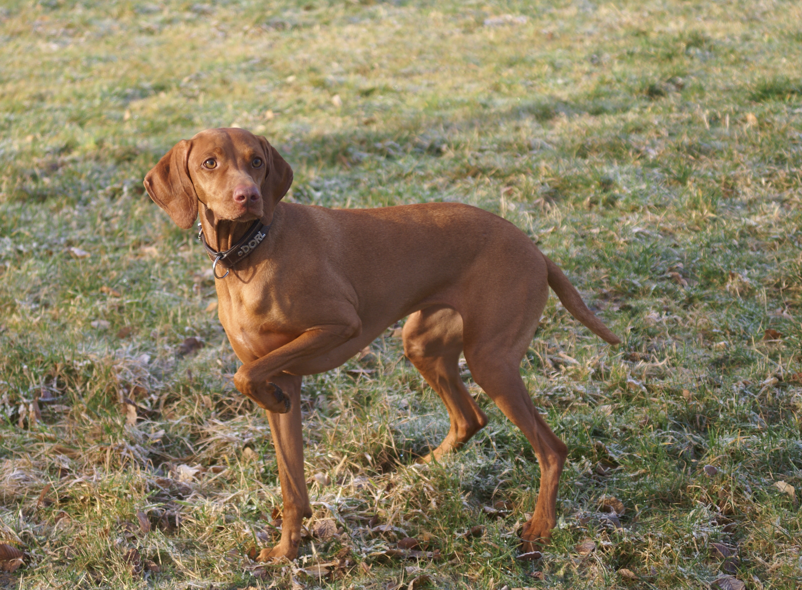

| Kutya fajták | Erdélyi kopó | Komondor | Kuvasz | Magyar vizsla | Mudi | Puli | Pumi |
|---|

A magyar vizslákra jellemző az elegáns megjelenés, a könnyed felépítés és a harmonikus mozgás. A viszlakölyköknek a szeme általában kék, de később barnára vált. Testalkata szikár, a szépség és erő harmóniáját tükrözi. A rövid szőrű vizsla zsemleszínű szőrzete alig kíván gondozást. A lakásban tartott példányok szőre egész évben hullik, ezért rendszeres kefélést igényel. Középnagy, 52–61 cm marmagasságú, 19–24 kg súlyú (egyes megtermett példányok akár a 35 kg-ot is elérhetik), rendkívül elegáns megjelenésű és mozgású, kedves, engedelmes természetű, még a vizslák közül is kitűnik intelligenciájával.
A vizslák között a legsokoldalúbbnak tartják, amely egyedül végzi el a pointerek, szetterek és a többi vadászkutya munkáját, szóval igazi mindenes. Helyt kell állniuk vízen, mezőn, erdőben is. Kiváló a szaglásuk, a levegőben terjedő szagokat persze a körülményektől függően mint például páratartalom, szélerősség, hőmérséklet akár 150 méterről is megérzik így a megsebzett vadat is könnyen megtalálják és megfelelő távolságból „megállják”. Amikor megmozdul a vad, a vadásznak kell el döntenie, hogy lelőhető-e a vad vagy sem, ezalatt a vizslának egy helyben kell maradnia. A lelőtt vadat készségesen a gazdájuk elé viszik. A rövid szőrű magyar vizsla nemcsak vadászkutya, hanem a család kedvence és a gyerekek játszópajtása is, hiszen intelligenciája, alkalmazkodóképessége minderre alkalmassá teszi. Rendkívül könnyen tanítható, de házőrzőnek nem alkalmas: a besurranót éppúgy körülrajongja, mint a közeli barátot. A drótszőrű magyar vizslával szemben a rövid szőrű inkább alkalmas lakásban tartásra, igazi „kanapé-specialista”, sőt télen a rövid szőrzete nem mindig nyújt megfelelő védelmet a metsző hideg ellen.
Városi tenyészetekben túlfinomodik, gyenge idegzetű lesz, noha szigorú és következetes tenyészkiválasztással a legjobb és modern vadászatra legalkalmasabb vizslát lehetne faragni belőle.